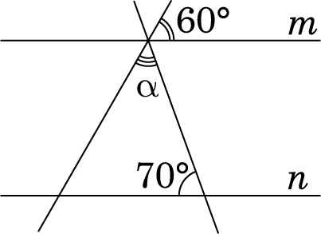
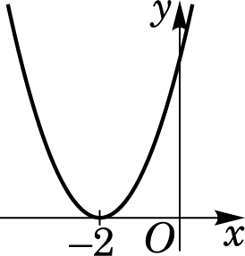
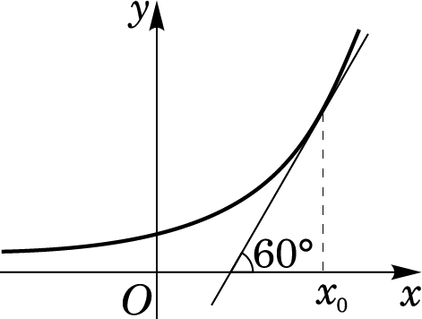
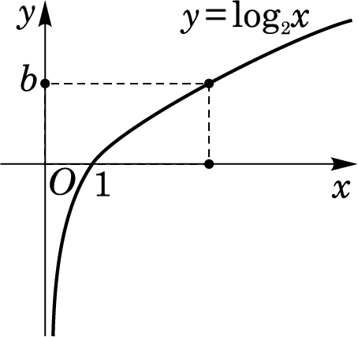
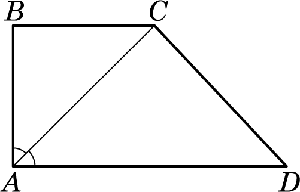
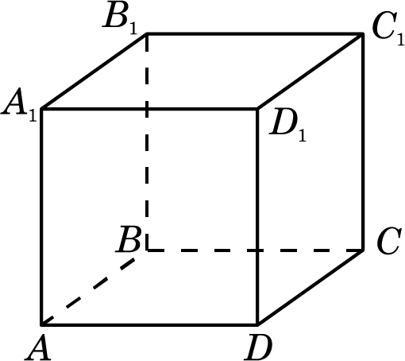

- У кіоску продають морозиво \(12\) різних видів, з них \(4\) види — з горіхами, решта — фруктові. Яка ймовірність того, що вибраний навмання покупцем один вид морозива буде фруктовим?
А \( \dfrac{1}{6}\)
Б \( \dfrac{1}{8}\)
В \( \dfrac{2}{3}\)
Г \( \dfrac{1}{12}\)
Д \( \dfrac{1}{3}\)
- За \(6\) однакових конвертів заплатили \(3\) грн. Скільки всього таких конвертів можна купити за \(12\) грн?
А \(6\)
Б \(24\)
В \(30\)
Г \(36\)
Д \(42\)
- Сума довжин усіх ребер прямокутного паралелепіпеда, що виходять з однієї вершини, дорівнює \(60\) см. Визначте суму довжин усіх ребер цього паралелепіпеда.
А \(360\) см
Б \(240\) см
В \(180\) см
Г \(120\) см
Д \(60\) см
- Яке з наведених чисел є коренем рівняння \( \dfrac{x}{2} + \dfrac{x}{3} = 2\)?
А \(0,4\)
Б \(1,2\)
В \(2,4\)
Г \(5\)
Д \(12\)

Усі зображені на рисунку прямі лежать в одній площині, прямі \(m\) і \(n\) є паралельними. Визначте градусну міру кута \(\alpha\).
А \(20^\circ\)
Б \(50^\circ\)
В \(60^\circ\)
Г \(70^\circ\)
Д \(110^\circ\)
- Якщо \(a < –2\), то \(1 - a + 2 = \)...
А \(-a-3\)
Б \(-a-1\)
В \(a-1\)
Г \(a+3\)
Д \(-a+3\)

Укажіть з-поміж наведених функцію, ескіз графіка якої зображено на рисунку.
А \( y = x^2 - 2\)
Б \( y = (x-2)^2\)
В \( y = x^2\)
Г \( y = (x + 2)^2\)
Д \( y = x^2 + 2\)
- Для місцевості, що лежить на рівні моря, нормальний атмосферний тиск становить 760 мм рт. ст. Із підняттям на кожні 100 метрів угору атмосферний тиск знижується на 10 мм рт. ст. Укажіть з-поміж наведених формулу, за якою визначають атмосферний тиск \(р\) (у мм рт. ст.) на висоті \(h\) метрів над рівнем моря.
А \(p = \dfrac{760 \cdot 100}{10h}\)
Б \(p = 760 - \dfrac{100h}{10}\)
В \(p = 760 + \dfrac{10h}{100}\)
Г \(p = 760 + \dfrac{100h}{10}\)
Д \(p = 760 - \dfrac{10h}{100}\)
- Точки \(A\), \(B\), \(C\) та \(D\) лежать в одній площині. Які з наведених тверджень є правильними?
I. Якщо точка \(B\) належить відрізку \(CD\), то \(CB + BD = CD\).
II. Якщо точка \(A\) не належить відрізку \(CD\), то \(CA + AD < CD\).
III. Якщо відрізок \(CD\) перетинає відрізок \(AB\) в точці \(O\) під прямим кутом і \(AO = OB\), то \(AC = CB\).
А лише І та ІІ
Б лише І
В лише І та ІІІ
Г лише ІІ
Д І, ІІ та ІІІ
- Якому з наведених проміжків належить корінь рівняння \(2^{x+3}-3\cdot2^{x}=10\sqrt{2}\)?
А \((-\infty; 0)\)
Б \([0; 0,5)\)
В \([0,5; 1)\)
Г \([1; 2)\)
Д \([2; +\infty)\)

Укажіть значення похідної функції \(y=f(x)\) у точці з абсцисою \(x_0\) (див. рисунок).
А \(0\)
Б \(-1\)
В \(1\)
Г \( \dfrac{1}{\sqrt{2}} \)
Д \( \sqrt{3} \)

Розв’яжіть нерівність \( \log_2 x < b\), використавши рисунок.
А \( (0; 2^b) \)
Б \( (0; b) \)
В \( (-\infty; 2^b) \)
Г \( (\log_2 b; +\infty) \)
Д \( (-\infty; b) \)
- Обчисліть \( \sin \alpha \), якщо \( \cos \alpha = 0,8\) і \( \dfrac{3\pi}{2} < \alpha < 2\pi\).
А \(1,6\)
Б \(-0,4\)
В \(-0,8\)
Г \(0,6\)
Д \(-0,6\)
- Основою піраміди є трикутник зі сторонами 5 см, 12 см і 13 см. Знайдіть висоту піраміди, якщо бічні грані нахилені до площини основи під кутом 45°.
А \(1\) см
Б \(4\) см
В \(2\) см
Г \( 2\sqrt{2}\) см
Д \( 4\sqrt{2}\) см
У завданнях 15–18 до кожного з трьох пунктів інформації, позначених цифрами, доберіть один правильний, на вашу думку, варіант, позначений буквою.
- Установіть відповідність між функцією (1–3) та її властивістю (А–Д).
Функція
1 \( y = x^3 + 1\)
2 \( y = 3 - x\)
3 \( y = \sin x\)
Властивість
А спадає на всій області визначення
Б зростає на всій області визначення
В непарна
Г парна
Д областю значень функції є проміжок \( (0; +\infty) \)
- До кожного початку речення (1–3) доберіть його закінчення (А–Д) так, щоб утворилося правильне твердження.
Початок речення
1 Сума чисел 32 і 18
2 Добуток чисел 32 і 18
3 Частка чисел 32 і 18
Закінчення речення
А є квадратом натурального числа.
Б є числом, що ділиться без остачі на 10.
В є найменшим спільним кратним чисел 32 і 18.
Г є раціональним числом, яке не є цілим.
Д є дільником числа 84.

Бічні сторони \(AB\) та \(CD\) прямокутної трапеції \(ABCD\) дорівнюють \(6\) см і \(10\) см відповідно. Менша діагональ трапеції лежить на бісектрисі її прямого кута (див. рисунок). Установіть відповідність між відрізком (1–3) та його довжиною (А–Д).
Відрізок
1 основа \(BC\)
2 проєкція сторони \(CD\) на пряму \(AD\)
3 середня лінія трапеції \(ABCD\)
Довжина відрізка
А \(6\) см
Б \(8\) см
В \(10\sqrt{2}\) см
Г \(10\) см
Д \(14\) см

На рисунку зображено куб \(ABCDA_1B_1C_1D_1\). До кожного початку речення (1–3) доберіть його закінчення (А–Д) так, щоб утворилося правильне твердження.
Початок речення
1 Пряма \(СD_1\)
2 Пряма \(AC\)
3 Пряма \(A_1B\)
Закінчення речення
А паралельна площині \(AA_1B_1B\).
Б перпендикулярна до площини \(AA_1B_1B\).
В належить площині \(AA_1B_1B\).
Г має з площиною \(AA_1B_1B\) лише дві спільні точки.
Д утворює з площиною \(AA_1B_1B\) кут \(45^\circ\).
Розв’яжіть завдання 19, 20. Відповідь записуйте лише десятковим дробом.
- Арифметичну прогресію \((a_n)\) задано формулою \(n\)-го члена: \(a_n=5-3,6n\). Визначте різницю \(a_4–a_2\).
- Визначте довжину (у см) твірної конуса, якщо його об’єм дорівнює \(800\pi\) см3, а площа основи — \(100\pi\) см2.
 Все буде Україна!
Все буде Україна!